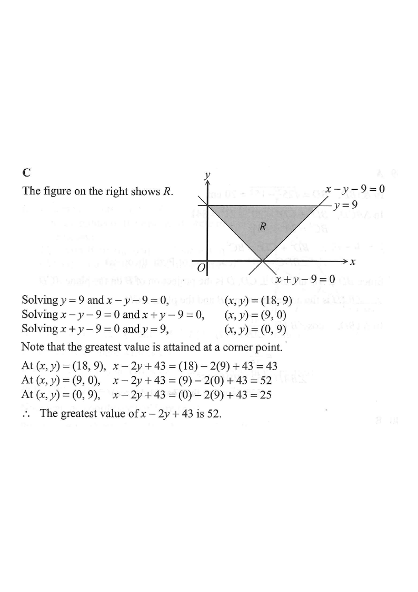

Scroll the solution — the figure updates with each step.
Topic: Inequalities and Linear Programming
Consider the following system of inequalities:
$$\begin{cases} y \le 9 \\ x-y-9 \le 0 \\ x+y-9 \ge 0 \end{cases}$$Let $R$ be the region which represents the solution of the above system of inequalities. If $(x, y)$ is a point lying in $R$, then the greatest value of $x-2y+43$ is

The system defines three half-planes. Their intersection $R$ forms a triangle with vertices at the corner points of the boundary lines.
The boundary lines are:
$\quad y = 9$ (horizontal), $\quad x-y-9=0$ (i.e. $x-y=9$), $\quad x+y-9=0$ (i.e. $x+y=9$).
Solve the boundary lines in pairs:
• $y=9$ and $x-y-9=0$:
$\quad x-9-9=0 \Rightarrow x=18$, so $(x,y)=(18,\,9)$.
• $x-y-9=0$ and $x+y-9=0$:
$\quad$ Add: $2x-18=0 \Rightarrow x=9$, then $y=0$, so $(x,y)=(9,\,0)$.
• $x+y-9=0$ and $y=9$:
$\quad x+9-9=0 \Rightarrow x=0$, so $(x,y)=(0,\,9)$.
The objective function is $P = x - 2y + 43$. By the corner-point principle, its maximum on $R$ occurs at a corner point.
| Corner point $(x,y)$ | $x-2y+43$ | Value |
|---|---|---|
| $(18,\,9)$ | $18-2(9)+43$ | $43$ |
| $(9,\,0)$ | $9-2(0)+43$ | $52$ |
| $(0,\,9)$ | $0-2(9)+43$ | $25$ |
Comparing the values: $43,\;52,\;25$.
The greatest value is $52$, attained at $(x,y)=(9,\,0)$.